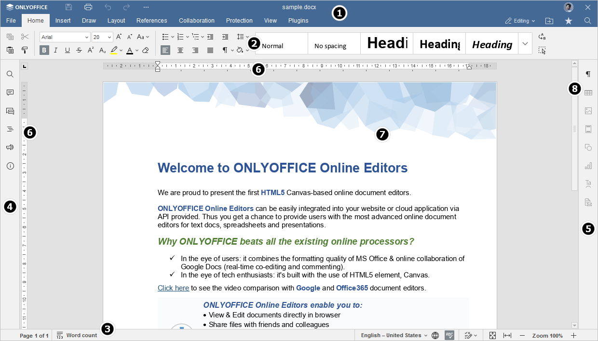
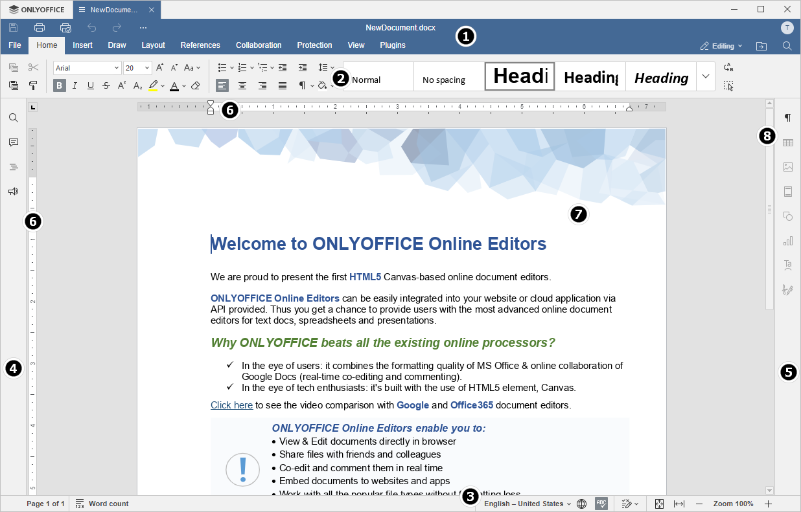

Uvod u korisnički interfejs Uređivača dokumenata
Uređivač dokumenata koristi interfejs sa karticama, gde su komande za uređivanje grupisane po funkcionalnosti unutar kartica.
Glavni prozor Online Uređivača dokumenata:

Glavni prozor Desktop Uređivača dokumenata:

Interfejs uređivača sastoji se od sledećih glavnih elemenata:
-
Zaglavlje uređivača prikazuje ONLYOFFICE logo, kartice za sve otvorene dokumente sa njihovim imenima i meni kartice.
Sa leve strane zaglavlja uređivača nalaze se dugmad Sačuvaj, Štampaj fajl, Poništi i Ponovi. Klikom na ikonu sa tačkama desno možete podesiti koja će dugmad biti sakrivena ako ih ima.
Sa desne strane zaglavlja uređivača, pored korisničkog imena, prikazane su sledeće ikone:
- Uređivanje, Pregledanje ili Prikazivanje - omogućavaju izbor željenog režima prikaza dokumenta i odgovarajućih prava i funkcija uređivanja.
- Otvori lokaciju fajla - u desktop verziji otvara folder u kome je fajl smešten u prozoru File explorer. u online verziji otvara folder Dokumenti modula gde je fajl smešten u novoj kartici pregledača.
- Deljenje (dostupno samo u online verziji) - omogućava podešavanje prava pristupa dokumentima smeštenim u oblaku.
- Označi kao omiljeno - klikom na zvezdicu dodajte fajl u omiljene radi lakšeg pronalaženja. Dodati fajl je prečica, tako da fajl ostaje na originalnoj lokaciji. Brisanje iz omiljenih ne briše fajl sa originalne lokacije.
- Pretraga - omogućava pretragu dokumenta po određenoj reči, simbolu itd.
-
Gornja alatna traka prikazuje skup komandi za uređivanje u zavisnosti od izabrane kartice menija. Trenutno su dostupne sledeće kartice: Fajl, Početna, Umetanje, Crtanje, Izgled, Reference, Saradnja, Zaštita, Dodaci.
Opcije Kopiraj, Zalepi, Iseci i Izaberi sve su uvek dostupne sa leve strane Gornje alatne trake bez obzira na izabranu karticu.
- Statusna traka koja se nalazi na dnu prozora uređivača prikazuje broj stranice i broj reči, kao i neke obaveštenja (na primer, "Sve promene sačuvane", “Veza je izgubljena” kada nema konekcije i uređivač pokušava da se ponovo poveže, itd.). Takođe omogućava podešavanje jezika teksta, uključivanje provere pravopisa, uključivanje režima praćenja promena i podešavanje zumiranja.
-
Levi bočni panel sadrži sledeće ikonice:
- - omogućava korišćenje alata za Pretragu i zamenu,
- - omogućava otvaranje panela za Komentare,
- - omogućava pristup panelu za Naslove i upravljanje njima,
- - (dostupno samo u online verziji) omogućava otvaranje panela Ćaskanja,
- - (dostupno samo u online verziji) omogućava kontaktiranje tima za podršku,
- - (dostupno samo u online verziji) omogućava pregled informacija o programu.
- Desni bočni panel omogućava podešavanje dodatnih parametara različitih objekata. Kada izaberete određeni objekat u tekstu, odgovarajuća ikona se aktivira na Desnom bočnom panelu. Klikom na ovu ikonu širite Desni bočni panel.
- Horizontalne i vertikalne Lenjire omogućavaju poravnavanje teksta i drugih elemenata u dokumentu, podešavanje margina, tab stopova i uvlačenja paragrafa.
- Radni prostor omogućava pregled sadržaja dokumenta, unošenje i uređivanje podataka.
- Traka za skrolovanje sa desne strane omogućava pomeranje kroz višestrane dokumente.
Radi vaše udobnosti, neki elementi interfejsa mogu biti sakriveni i ponovo prikazani po potrebi. Za više informacija o podešavanju prikaza pogledajte ovu stranu.
Kada ima mnogo ikona na levim i desnim panelima, neke se sakrivaju i mogu se pristupiti klikom na dugme Više.